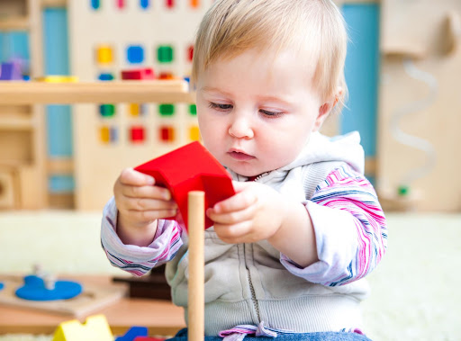
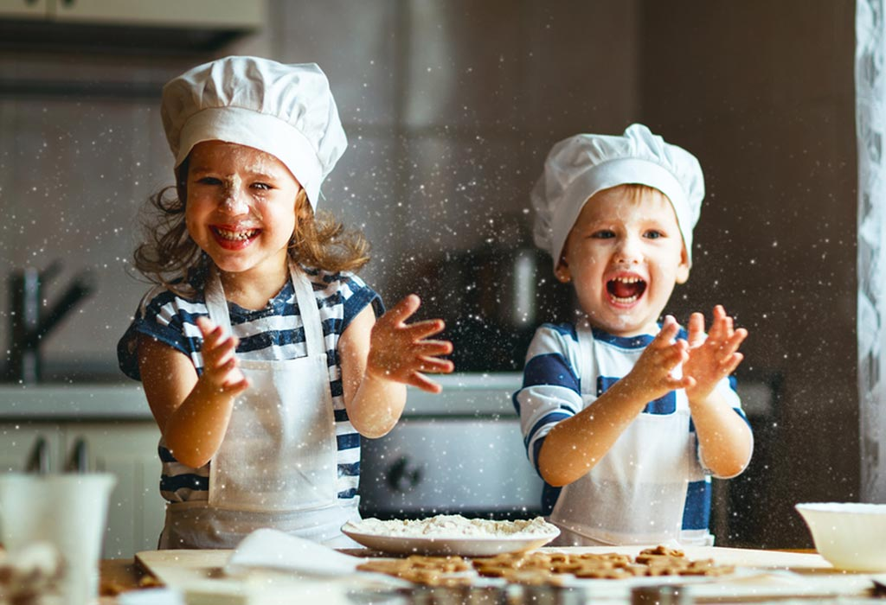

РЕЖИМ РОБОТИ:
Понеділок п’ятниця
8:30-19:30
Субота -неділя
10:00-17:00

КОНТАКТИ
м. Львів, вул. Трускавецька 123
+380962677857

ВАРТІСТЬ НАВЧАННЯ:
7000грн/міс -група повного дня (5-харчування)
4500грн/міс - група короткого дня (3-харчування )
500грн/день у вихідні дні (3-харчування )

ГРУПИ
Приймаємо діток від 1,5 роки
В групі 8-12 дітей
Також у нас є група вихідного дня!

Занаття
англійська мова

музика
мистецтвознавство
математика/підготовка до школи

казкотерапія
ранній розвиток, заняття з моторики
ліплення
хореографія
подорожуємо світом разом
кулінарія
святкування дня народження
пляльковий театр та тематичні дні
cупровід психолога
щоденний медичний контроль

Наші переваги
-
П’ятиразове збалансоване харчування
Ми дбаємо про збалансоване та якісне харчування Вашої дитини. У меню різноманітні фрукти, запіканки та млинці, овочеві супи та салати, м’ясо-рибні смаколики, приготовлені кухарем на власній кухні. Ці страви неодмінно сподобаються Вашій малечі.
-
Фінансова лояльність
Перерахунок в кінці місяця у випадку тривалої хвороби. Отримання фінансових канікул терміном на два тижні на рік зі збереженням місця у групі. У вартість абонемента вже включені всі предмети нашої навчальної програми.
-
Групи
Формуємо групи від 8 до 12 дітей з урахуванням вікових особливостей. Це гарантує індивідуальний підхід до кожної дитини. Протягом дня батьки отримують звіти про проведений день у Viber розсилках.
-
Потужна матеріально-технічна база
Євроремонт, цілодобовий відеонагляд, власний ігровий дитячий майданчик, затишні кімнати, сучасні меблі, якісні екологічні розвиваючі іграшки, забезпечують комфортне та безпечне перебування вашої дитини.
-
Персонал
Ретально підібрана професійна команда, що пройшла конкурсний відбір та випробовувальний термін. У кожній групі з дітками працює кваліфікований вихователь з відповідною освітою, його помічник.
-
Здоров’я та безпека
Щоранку огляд прибулих дітей здійснює медсестра, запобігаючи поширенню інфекційних захворювань, оскільки ми дбаємо про здоров’я кожної дитини. Щоденне кварцування, регулярне провітрування і вологе прибирання, дезінфекція поверхонь, зволожувачі повітря. Тривалі прогулнки за любих погодніх умов. За безпекою дітей допомагають слідкувати камери цілодобового спостереження.
ПРО НАС
Садочок Мінібамбіні – це новий приватний заклад дошкільної освіти у Львові. Його особливість у комплексному підході до виховання дітей, опираючись на методику Марії Монтессорі. Відкриваючи у собі творчість, креативність, впевненість, вміння запам‘ятовувати, мислити, аналізувати, висловлювати та обґрунтовувати, наші вихованці вчаться сприймати світ таким, де кожна думка має право на життя. Будівля й територія садка відповідають державним вимогам Санітарного регламенту для дошкільних навчальних закладів. Усі приміщення, де перебувають діти, є світлими й просторими. Працює терморегуляція, дезинфекція та оброблення озонатором, бактецидною лампою. Територія для прогулянок облаштована ігровими майданчиками для кожної групи. На всій території закладу ведеться відеоспостереження.